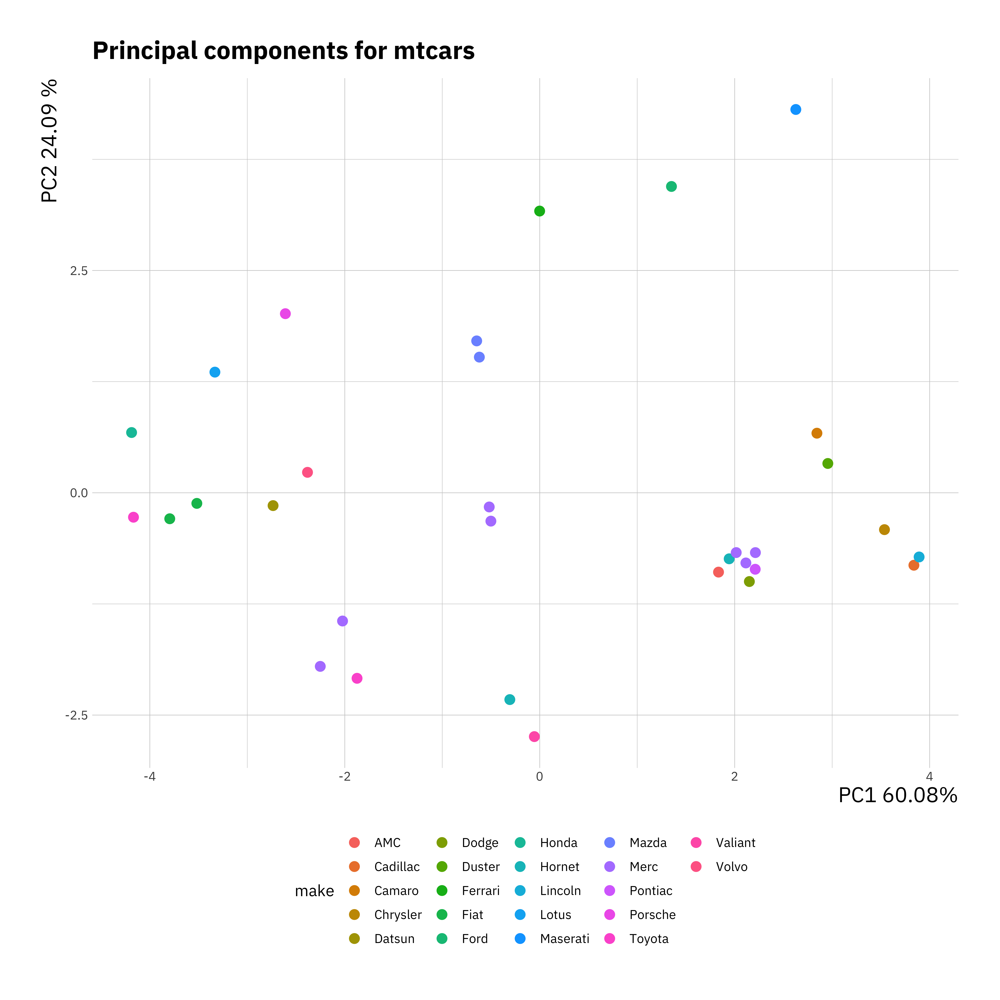
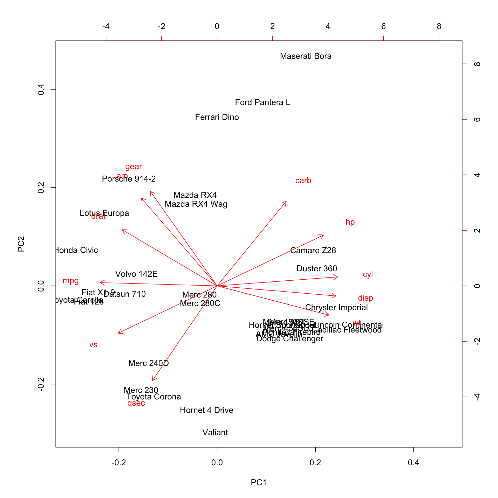
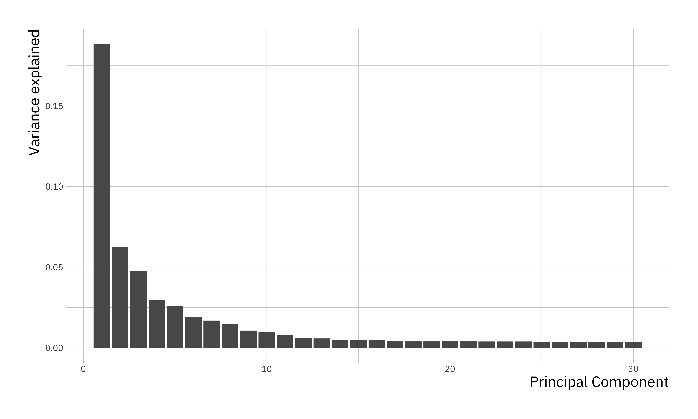
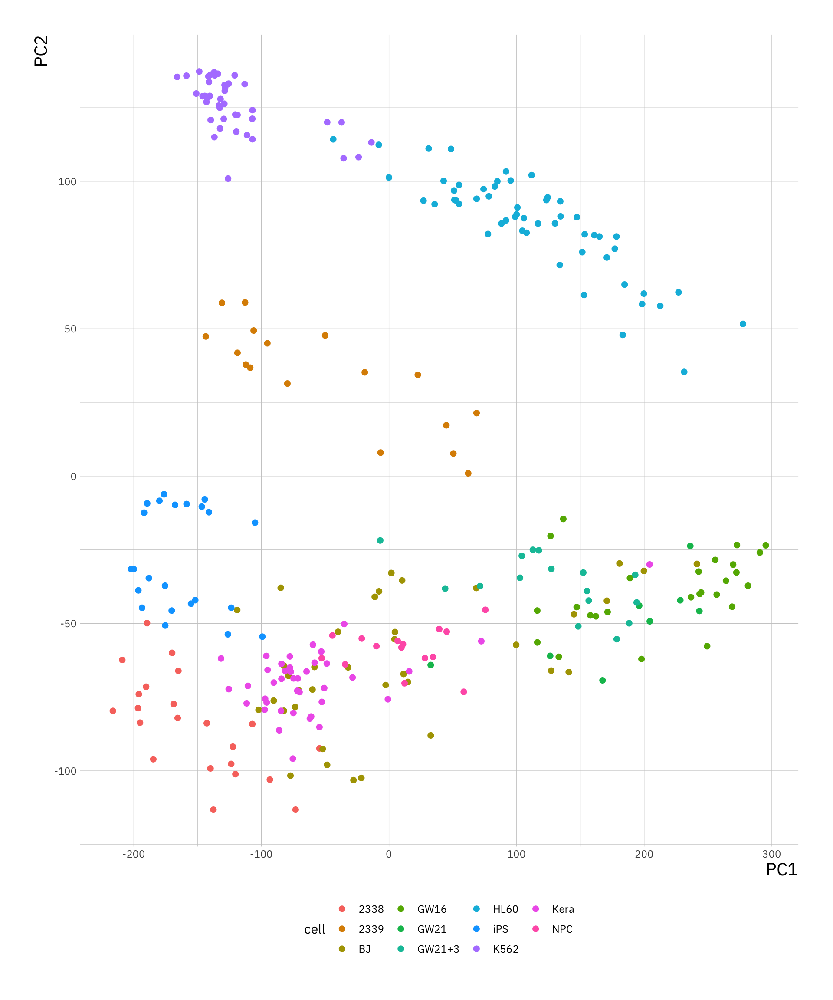

3 Practical: Principal component analysis
In this practical we will practice some of the ideas outlined in the lecture on Principal Component Analysis (PCA), this will include computing principal components, visualisation techniques and an application to real data.
3.1 Data
For this practical we will use some data that is built into R and we require two additional files you will download:
3.2 Introduction
We use PCA in order to explore complex datasets. By performing dimensionality reduction we can better visualize the data that has many variables. This technique is probably the most popular tool applied across bioscience problems (e.g. for gene expression problems).
In many real-world dataset we deal with a high dimensional data, e.g. for a number of individuals we can take a number of health related measurement (called variables). This is great, however having a large number of variables also means that it is difficult to plot the data as it is (in its “raw” format), and in turn it might be difficult to understand if this dataset contains any interesting patterns/trends/relationships across individuals. Using PCA we visualize such data in a more “human friendly” fashion.
Recall:
- PCA performs a linear transformation to data.
- This means that any input data can be visualized in a new coordinate system. The first coordinate (PC 1) variance is found on the first coordinate; each subsequent coordinate is orthogonal to the previous one and contains the larges variance from what was left.
- Each principal component is associated with certain percentage of the total variation in the dataset.
- If variables are strongly correlated with one another, a first few principal components will enable us to visualize the relationships present in any dataset.
- Eigenvectors describe new directions, whereas accompanying eigenvalues tell us how much variance there is in the data in given direction.
- The eigenvector with the highest eigenvalue is called the first principal component. The second highest eigenvalue would correspond to a second principle component and etc.
- There exist a \(d\) number of eigenvalues and eigenvectors; \(d\) is also equal to the size of the data (number of dimensions).
- For the purpose of visualization we preselect the first \(q\) components, where \(q < d\).
3.3 Exercise I
There are many datasets built into R. Wed will look at the mtcars dataset. Type ?mtcars to get a description of data. Then use head() function to have a look at the first few rows; and dim() to get the dimensions of the data.
## mpg cyl disp hp drat wt qsec vs am gear carb
## Mazda RX4 21.0 6 160 110 3.90 2.620 16.46 0 1 4 4
## Mazda RX4 Wag 21.0 6 160 110 3.90 2.875 17.02 0 1 4 4
## Datsun 710 22.8 4 108 93 3.85 2.320 18.61 1 1 4 1
## Hornet 4 Drive 21.4 6 258 110 3.08 3.215 19.44 1 0 3 1
## Hornet Sportabout 18.7 8 360 175 3.15 3.440 17.02 0 0 3 2
## Valiant 18.1 6 225 105 2.76 3.460 20.22 1 0 3 1## [1] 32 11## You will likely need to install these fonts on your system as well.
##
## You can find them in [/Users/ranaaaa/Library/R/3.6/library/hrbrthemes/fonts/plex-sans]In this case we have \(32\) examples (cars in this case), and \(11\) features.
Now we can perform a principal component analysis, in R it is implemented as the prcomp() function. We can type ?prcomp to see a description of the function and some help on possible arguments. Here we set center and scale arguments to TRUE, recall from the lecture why this is important. We can try to perform PCA without scaling and centering and compare.
We can use the summary() function to summarise the results from PCA, it will return the standard deviation, the proportion of variance explained by each principal component, and the cumulative proportion.
## Importance of components:
## PC1 PC2 PC3 PC4 PC5 PC6
## Standard deviation 2.5707 1.6280 0.79196 0.51923 0.47271 0.46000
## Proportion of Variance 0.6008 0.2409 0.05702 0.02451 0.02031 0.01924
## Cumulative Proportion 0.6008 0.8417 0.89873 0.92324 0.94356 0.96279
## PC7 PC8 PC9 PC10 PC11
## Standard deviation 0.3678 0.35057 0.2776 0.22811 0.1485
## Proportion of Variance 0.0123 0.01117 0.0070 0.00473 0.0020
## Cumulative Proportion 0.9751 0.98626 0.9933 0.99800 1.0000Note, Proportion of Variance will always add up to \(1\). Here the PC1 explain \(60.08%\) of the variance, and PC2 explains \(24.09%\), which means together PC1 and PC2 account for \(84.17%\) of the variance.
Using the str() function we can see the full structure of an R object, or alternatively using ?prcomp in the Value section. In this case the cars_pca variable is a list containing several variables, x is the data represented using the new principal components. We can now plot the data in the first two principal components:
pca_df <- data.frame(cars_pca$x, make = stringr::word(rownames(mtcars), 1))
ggplot(pca_df, aes(x = PC1, y = PC2, col = make)) +
geom_point(size = 3) +
labs(x = "PC1 60.08%",
y = "PC2 24.09 %",
title = "Principal components for mtcars") +
theme(legend.position = "bottom")
Here we added a color based on the make of each car. We can observe which samples (or cars) cluster together. Have a look at these variables and decide why certain cars or models would cluster together.
We created this plot using the ggplot2 package, it is also possible to do this using base plot if you prefer.
3.4 Exercise II
Next we look at another representation of the data, the biplot. This is a combination of a PCA plot of the data and a score plot. We saw the PCA plot in the previous section in a biplot we add the original axis as arrows.

We can see the original axis starting from the origin. Therefore we can make observations about the original variables (e.g. cyl and mpg contribute to PC1) and how the data points relates to these axes.
3.5 Exercise III
Now try to perform a PCA on the USArrests data also build into R. Typing ?USArrests will give you further information on the data. Perform the analysis on the subset USArrests[, -3] data.
3.6 Exercise IV: Single cell data
We can now try to apply what we learned above on a more realistic datasets. You can download the data either on canvas or using these links Pollen2014.txt and SupplementaryLabels.txt. Her we will be dealing with single cell RNA-Seq (scRNA-Seq) data, which consist of \(300\) single cells measured across \(8686\) genes.
pollen_df <-read.table("Pollen2014.txt", sep=',', header = T,row.names=1)
label_df <-read.table("SupplementaryLabels.txt", sep=',', header = T)
pollen_df[1:10, 1:6]## Cell_2338_1 Cell_2338_10 Cell_2338_11 Cell_2338_12 Cell_2338_13
## MTND2P28 78 559 811 705 384
## MTATP6P1 2053 1958 4922 4409 2610
## NOC2L 1 125 126 0 487
## ISG15 2953 4938 580 523 2609
## CPSF3L 2 42 19 0 37
## MXRA8 0 0 0 0 0
## AURKAIP1 302 132 64 492 11
## CCNL2 0 235 0 84 13
## MRPL20 330 477 288 222 44
## SSU72 604 869 2046 158 530
## Cell_2338_14
## MTND2P28 447
## MTATP6P1 3709
## NOC2L 66
## ISG15 1
## CPSF3L 12
## MXRA8 0
## AURKAIP1 182
## CCNL2 11
## MRPL20 282
## SSU72 272## [1] 8686 300Measurements of scRNA-Seq data are integer counts, this data does not have good properties so we perform a transformation on the data. The most commonly used transformation on RNA-Seq count data is \(\log_2\). We will also transpose the data matrix to rows representing cells and columns representing genes. This is the data we can use to perform PCA.
# scRNA-Seq data transformation
pollen_mat <- log2(as.matrix(pollen_df) + 1)
# transpose the data
pollen_mat <- t(pollen_mat)We will now use information that we read into the label_df variable to rename cells.
## [1] "Cell_Identifier" "Population"
## [3] "Cell_names" "TrueLabel_CellLevel"
## [5] "Tissue_name" "TrueLabel_TissuelLevel"Next we perform PCA on the data and extract the proportion of variance explained by each component.
sc_pca <- prcomp(pollen_mat)
# variance is the square of the standard deviation
pr_var <- sc_pca$sdev^2
# compute the variance explained by each principal component
prop_var_exp <- pr_var / sum(pr_var)Think about the calculation and what exactly it means. We can visualise this
var_exp <- data.frame(variance = prop_var_exp, pc = 1:length(prop_var_exp))
ggplot(var_exp[1:30, ], aes(x = pc, y = variance)) +
geom_bar(stat = "identity") +
labs(x = "Principal Component",
y = "Variance explained")
We see that the first few principal components explain significant variance, but after about the PC10, there is very limited contribution. Next we will plot the data using the first two Principal components as before.
sc_pca_df <- data.frame(sc_pca$x, cell = rownames(sc_pca$x),
var_exp = prop_var_exp)
ggplot(sc_pca_df, aes(x = PC1, y = PC2, col = cell)) +
geom_point(size = 2) +
theme(legend.position = "bottom")
Why is it not useful to create biplot for this example?